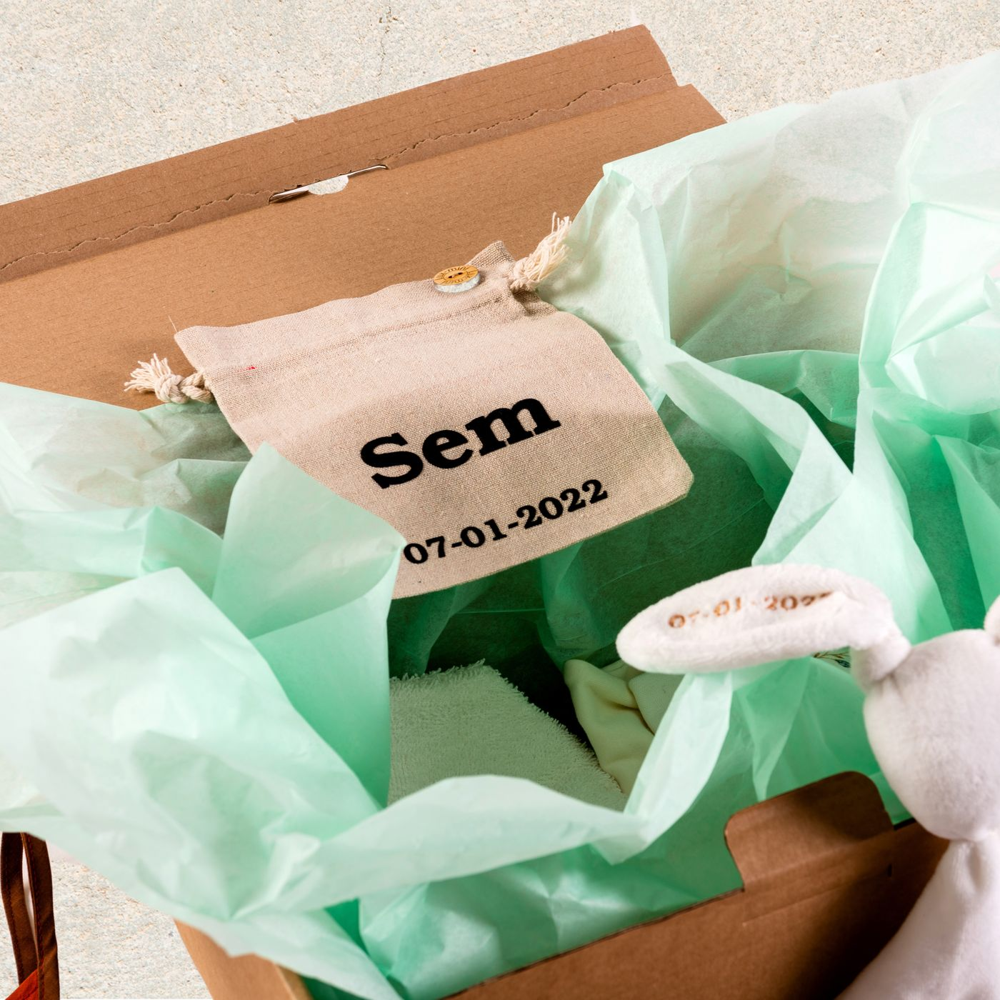
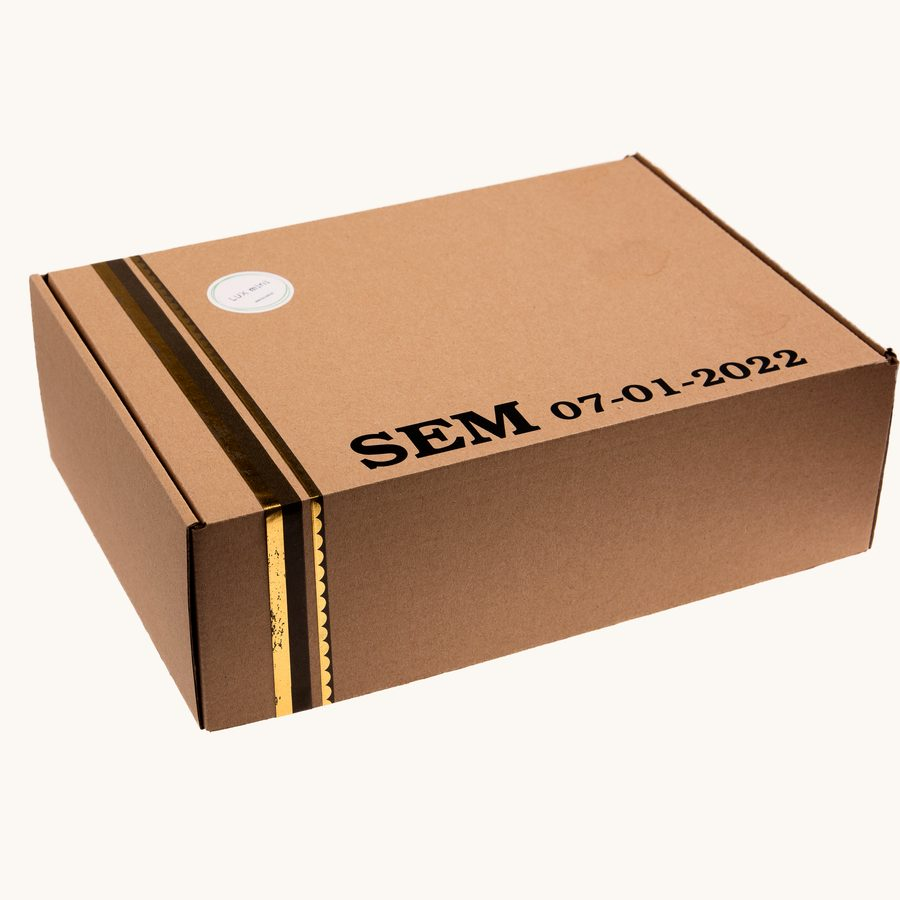
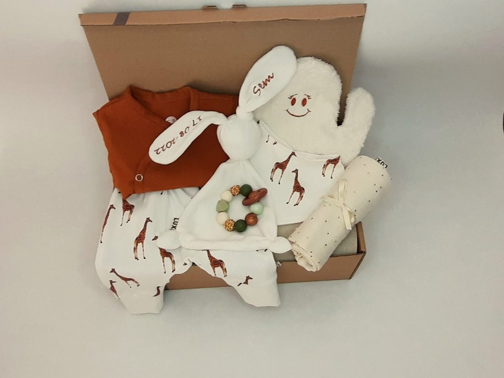
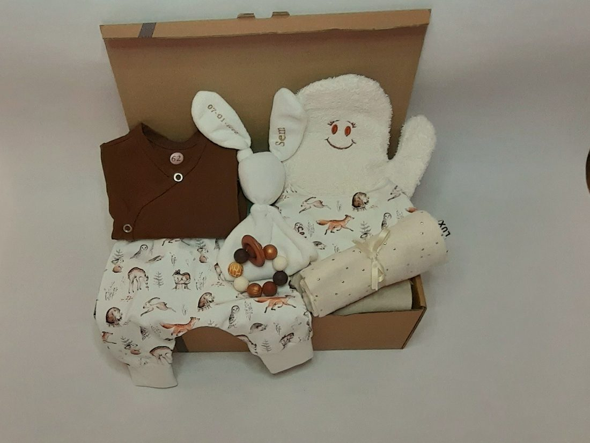
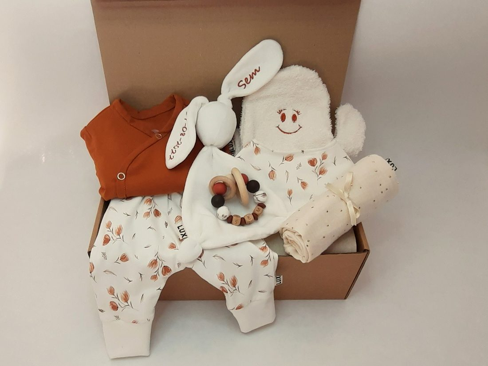
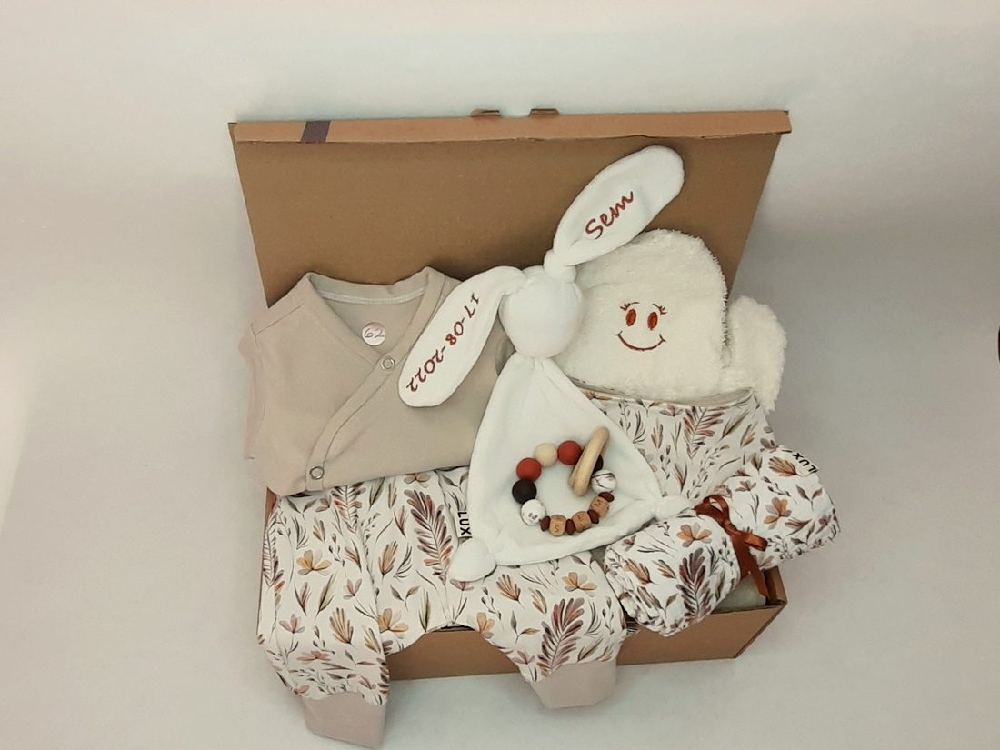
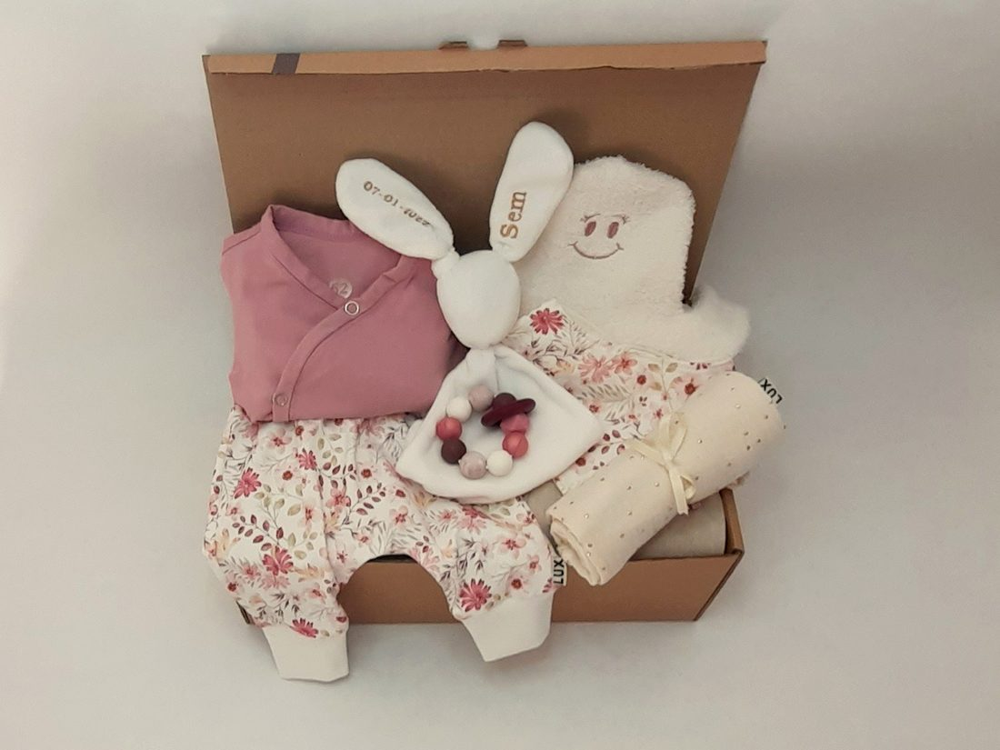
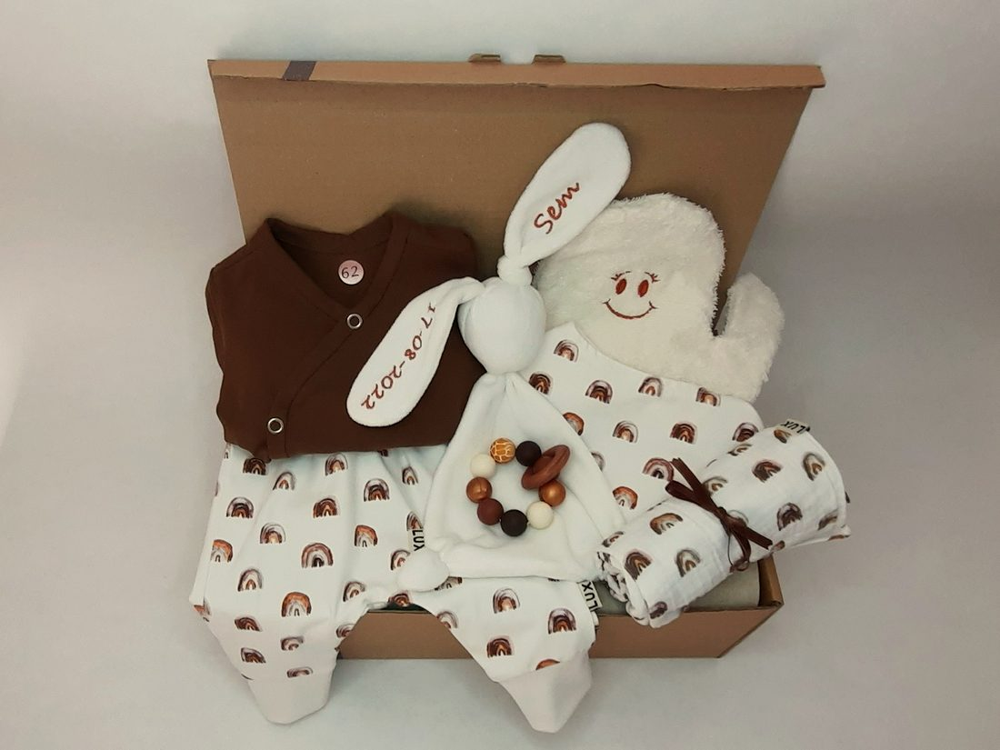
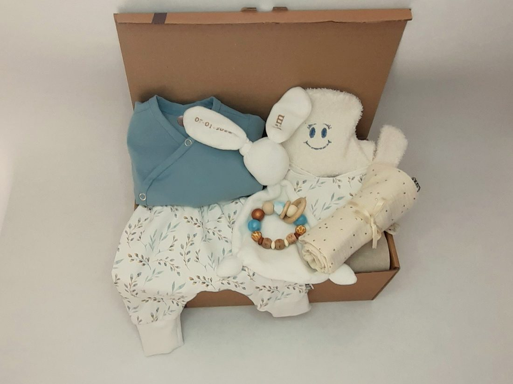
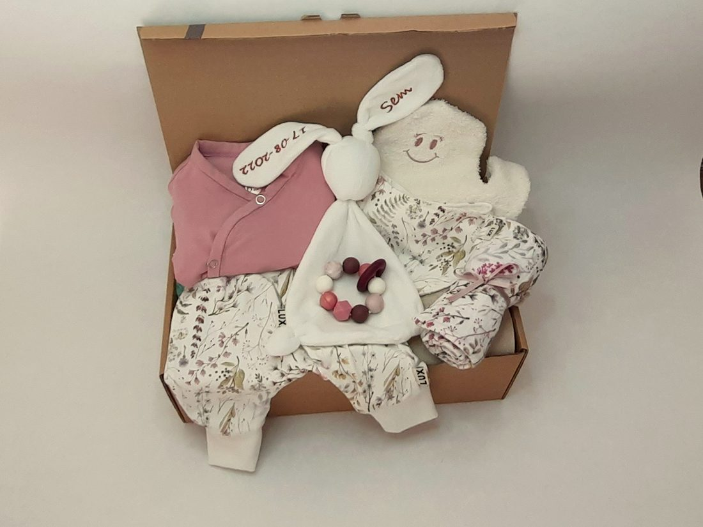

Inspiratie
Kraamcadeauboxen
Een box vol handgemaakte babyproducten in één thema, met de naam en geboortedatum van de baby. Zelfs de doos is persoonlijk. Vier formaten, van € 35 tot € 80. Een kraamcadeaubox wordt binnen 7 werkdagen verzonden.
001 — Foto's










003 — Contact
Zin om samen
iets moois
te maken?